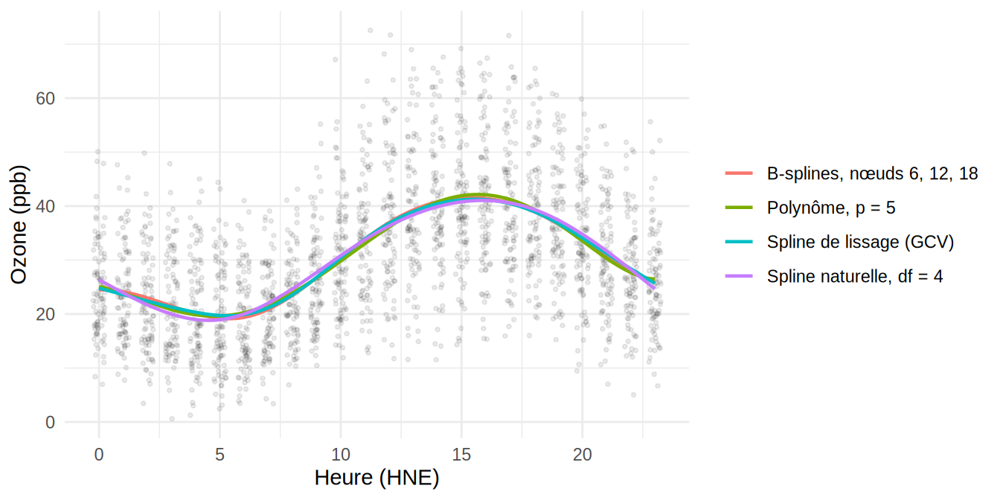

7Régression non-linéaire : polynômes, fonctions par morceaux et splines
Dernière modification
9 octobre 2026
Le chapitre précédent a présenté deux estimateurs locaux de \(f(x) = E[Y\mid X=x]\) : l’estimateur \(k\)NN et l’estimateur de noyau. Ce chapitre présente des approches alternatives fondées sur des bases de fonctions : on écrit \[Y_i = \beta_0\, b_0(X_i) + \beta_1\, b_1(X_i) + \cdots + \beta_q\, b_q(X_i) + \epsilon_i,\] où les \(b_k(\cdot)\) sont des transformations connues de la variable explicative. Le modèle reste linéaire en \(\boldsymbol\beta\) : tout ce qui découle des moindres carrés (estimation, IC, tests) s’applique.
7.1 Régression polynomiale
On approxime \(f(x)\) par un polynôme de degré \(p\) : \[f(x) = \beta_0 + \beta_1 x + \cdots + \beta_p x^p,\] ce qui donne le modèle linéaire \(Y_i = \beta_0 + \beta_1 X_i + \cdots + \beta_p X_i^p + \epsilon_i\). On estime \(\boldsymbol\beta\) par \[\hat{\boldsymbol\beta} = (\boldsymbol X^\top \boldsymbol X)^{-1}\boldsymbol X^\top \boldsymbol Y, \qquad
\boldsymbol X = \begin{pmatrix} 1 & X_1 & \cdots & X_1^p\\ \vdots & \vdots & & \vdots\\ 1 & X_n & \cdots & X_n^p \end{pmatrix}.\] Le vecteur \(\boldsymbol\beta\) contient \(p+1\) éléments : on dit qu’on a \(p+1\)degrés de liberté.
Pour sélectionner \(p\), on peut utiliser l’\(AIC\), le \(BIC\), des tests \(F\), ou — dans l’esprit du Chapitre 4 — choisir la valeur qui minimise le taux d’erreur test estimé par validation croisée (la version LOOCV admet une expression explicite).
Une fois \(p\) choisi, \(\hat f(x) = \boldsymbol x_*\hat{\boldsymbol\beta}\) avec \(\boldsymbol x_* = (1,\ x,\ x^2,\ \ldots,\ x^p)\), et \[Var[\hat f(x)] = \boldsymbol x_*\, Var[\hat{\boldsymbol\beta}]\, \boldsymbol x_*^\top,\] ce qui permet de construire des bandes de confiance autour de \(\hat f(x)\). En R : lm(Y ~ poly(X, 2, raw = TRUE), data = data).
On reprend la hauteur en fonction du diamètre du Chapitre 6. On ajuste des polynômes de degré 1 à 6 et on choisit \(p\) par LOOCV, en utilisant la formule explicite du Chapitre 4 : \(VC_{(n)} = \frac{1}{n}\sum_i \left(\frac{e_i}{1 - h_i}\right)^2\), où \(e_i\) est le résidu et \(h_i\) le levier de l’observation \(i\).
La LOOCV et l’AIC retiennent le degré 2, le BIC la droite ; les écarts entre les degrés 1, 2 et 3 sont minces. Le polynôme de degré 2 a un coefficient négatif sur \(x^2\) qui traduit la concavité de la relation. Au-delà du degré 3, l’erreur de validation croisée augmente : les termes supplémentaires suivent le bruit des observations. On note que le degré 2 donne \(VC_{(n)} \approx 6{,}2\), du même ordre que l’estimateur de noyau du Chapitre 6.
Figure 7.1: Régression polynomiale de la hauteur sur le diamètre pour \(p = 1\), \(2\) et \(5\), avec la bande de confiance à 95 % de \(\hat f(x)\) pour \(p = 2\).
La bande de confiance, obtenue avec predict(..., interval = "confidence"), s’élargit nettement au-delà de 30 cm, là où les arbres sont rares : \(Var[\hat f(x)] = \boldsymbol x_*\, Var[\hat{\boldsymbol\beta}]\, \boldsymbol x_*^\top\) croît avec les puissances de \(x\). Le polynôme de degré 5, lui, se distingue surtout aux extrémités du domaine, où il plonge sous les petits diamètres et se redresse pour les gros : le comportement erratique des polynômes de degré élevé aux bords est un défaut sur lequel on reviendra avec les splines.
Il faut reconnaître que ce jeu de données n’est pas idéal pour la régression polynomiale : la relation est monotone et presque rectiligne, de sorte que la droite fait déjà l’essentiel du travail et que les critères peinent à départager les degrés 1 à 3. Les polynômes sont vraiment à leur avantage lorsque la courbe change de direction à l’intérieur du domaine, comme dans l’exemple suivant.
Exemple — Jeu de données qualite_air
Le jeu de données qualite_air () contient les mesures horaires de 2025 des 42 stations du Réseau de surveillance de la qualité de l’air du Québec (RSQAQ), diffusées par Données Québec et préparées par donneesbleues.ca. Chaque ligne correspond à une station (Station) et à une heure (Date_Heure, en heure normale de l’Est, l’heure indiquée marquant la fin de l’intervalle mesuré) ; les colonnes donnent la concentration de différents contaminants, notamment l’ozone (O3, en ppb), le dioxyde d’azote (NO2, en ppb) et les particules fines (PM2.5-T640, en µg/m³). Le nombre de stations qui mesurent un contaminant varie de 2 à 40, d’où de nombreuses valeurs manquantes.
Exemple — Cycle journalier de l’ozone sur qualite_air
L’ozone troposphérique se forme par photochimie à partir des oxydes d’azote sous l’effet du rayonnement solaire : sa concentration suit un cycle journalier marqué, surtout en été. On retient les heures de juin, juillet et août à la station de Longueuil, soit \(n = 2\,204\) mesures, et on modélise la concentration d’ozone \(Y\) en fonction de l’heure \(X \in \{0, 1, \ldots, 23\}\).
air <-read.csv("Jeux de données/qualite_air.csv", fileEncoding ="UTF-8-BOM")air$heure <-as.integer(substr(air$Date_Heure, 12, 13))air$mois <-as.integer(substr(air$Date_Heure, 6, 7))ozone <-subset(air, Station =="06600 - Longueuil"& mois %in%6:8&!is.na(O3))
Figure 7.2: Concentration horaire d’ozone à Longueuil, juin à août 2025, en fonction de l’heure. Les points sont légèrement décalés horizontalement pour la lisibilité.
Le nuage de points montre une bosse nette : la concentration est minimale au petit matin, monte rapidement en avant-midi, culmine en fin d’après-midi et redescend plus lentement en soirée. On ajuste des polynômes de degré 1 à 8 et on choisit \(p\) par LOOCV.
Le contraste avec arbres est net. La droite est inadéquate (la courbe a un minimum vers 5 h et un maximum vers 16 h), le degré 2 ne suffit pas (la bosse est asymétrique : montée rapide le matin, descente plus lente en soirée), et \(VC_{(n)}\) chute de 25 % entre les degrés 1 et 3. Au-delà, le critère devient pratiquement plat : le BIC retient \(p = 5\), mais les degrés 3 à 8 donnent des courbes presque identiques. Avec \(n = 2\,204\), chaque paramètre supplémentaire coûte peu en variance, et c’est le biais qui décide.
Figure 7.3: Concentration horaire d’ozone à Longueuil (juin à août 2025) et régression polynomiale pour \(p = 1\), \(3\) et \(5\). Pour \(p = 5\), la bande grise est l’intervalle de confiance à 95 % de \(f(x)\) et les pointillés délimitent l’intervalle de prédiction à 95 % d’une nouvelle observation. Les points sont légèrement décalés horizontalement pour la lisibilité.
Trois raisons font de cet exemple un cas favorable à la régression polynomiale. La courbe est lisse et change deux fois de direction à l’intérieur du domaine, ce qu’un polynôme de degré modéré décrit avec une poignée de paramètres. La variable explicative ne prend que 24 valeurs distinctes, chacune répétée une centaine de fois : l’estimateur \(k\)NN du Chapitre 6 s’en accommode mal (les voisins sont tous ex æquo), alors qu’un modèle linéaire en \(\boldsymbol\beta\) n’y voit aucune difficulté. Enfin, la bande de confiance est étroite sur tout le domaine, y compris aux bords, parce que les observations y sont aussi nombreuses qu’ailleurs.
Remarque — Bande de confiance ou bande de prédiction?
La bande grise de la Figure 7.3 peut sembler bien étroite par rapport à la dispersion des points. C’est qu’elle ne porte pas sur les observations, mais sur la courbe \(f(x) = E[Y\mid X = x]\) : elle répond à la question « où se trouve la concentration moyenne à cette heure? ». Sa demi-largeur est de l’ordre de \(\hat\sigma/\sqrt{n_x}\), où \(n_x\) est le nombre d’observations près de \(x\) ; avec \(\hat\sigma \approx 10\) ppb et une centaine de mesures par heure, cela donne environ \(\pm 1\) ppb. Pour encadrer une nouvelle mesure \(Y_0\), il faut l’intervalle de prédiction, obtenu avec predict(..., interval = "prediction"), dont la demi-largeur est d’environ \(2\hat\sigma \approx 21\) ppb et qui contient bien l’essentiel du nuage (pointillés). Le cycle journalier n’explique qu’une partie de la variabilité de l’ozone ; le reste tient à la météo et aux émissions de chaque jour.
Une réserve s’impose cependant : les deux intervalles supposent des erreurs indépendantes, alors que les mesures d’heures consécutives d’une même journée sont fortement corrélées, une journée chaude et ensoleillée restant au-dessus de la courbe du matin au soir. Le nombre effectif d’observations indépendantes est donc bien inférieur à \(n = 2\,204\), plus proche du nombre de jours (92), et la bande de confiance sous-estime l’incertitude réelle sur \(f\). Les modèles pour données corrélées dépassent le cadre de ce cours, mais il faut garder cette limite en tête chaque fois qu’on applique une méthode de régression à une série chronologique.
7.2 Régression avec des fonctions constantes par morceaux
Posons \([A,B]\) le domaine de \(X\) (en pratique \(A = \min_i X_i - \varepsilon\) et \(B = \max_i X_i + \varepsilon\)). Considérons une partition \(A = c_0 < c_1 < \cdots < c_K = B\) et définissons, pour \(k = 1,\ldots,K\), \[b_k(x) = \begin{cases} 1 & \mbox{si } x\in[c_{k-1},c_k],\\ 0 & \mbox{sinon}.\end{cases}\] On approxime \(f\) par une fonction en escalier : \(f(x) = \beta_1 b_1(x) + \cdots + \beta_K b_K(x)\). La variable \(X\) a été discrétisée et on retrouve un modèle d’ANOVA à un facteur à \(K\) modalités. L’estimateur des moindres carrés est \[\hat\beta_k = \frac{\sum_{i=1}^n b_k(X_i)Y_i}{n_k}, \qquad n_k = \sum_{i=1}^n b_k(X_i),\] c’est-à-dire la moyenne des \(Y_i\) dans l’intervalle \(k\), et \(Var[\hat\beta_k] = \sigma^2/n_k\). En R : lm(O3 ~ cut(heure, 4), data = ozone).
Exemple — Fonctions constantes par morceaux sur qualite_air
On découpe les 24 heures en \(K\) intervalles de même largeur et on compare les valeurs de \(K\) par LOOCV. Avec \(K = 24\), chaque intervalle contient une seule heure et \(\hat f\) est simplement la moyenne horaire.
Figure 7.4: Fonctions constantes par morceaux ajustées au cycle journalier de l’ozone pour \(K = 4\) et \(K = 8\) intervalles.
L’erreur de validation croisée diminue jusqu’à \(K = 12\) puis stagne : les moyennes horaires (\(K = 24\)) font à peine mieux que \(K = 12\), pour deux fois plus de paramètres. Même au mieux, l’approche reste en retrait du polynôme de degré 5 (\(VC_{(n)} \approx 109{,}4\) avec 6 paramètres), parce qu’une fonction en escalier remplace la courbe lisse par une suite de plateaux : à l’intérieur de chaque intervalle, elle ignore la pente, et les sauts entre intervalles n’ont aucun sens physique. L’intérêt de la méthode est ailleurs : elle montre que discrétiser \(X\) revient à un modèle linéaire, ce qui ouvre la voie aux splines.
7.3 Régression avec des splines
7.3.1 Splines de régression
Les splines sont des polynômes définis par intervalles, avec des contraintes de régularité aux points de jonction (nœuds, knots).
Cas simple (\(K=2\) intervalles, degré \(p=3\)) : on divise \([A,B]\) en \([c_0,c_1)\) et \([c_1,c_2)\) et on approxime \[f(x) = \begin{cases}\beta_0 + \beta_1 x + \beta_2 x^2 + \beta_3 x^3 & \mbox{si } x\in[c_0,c_1),\\ \gamma_0 + \gamma_1 x + \gamma_2 x^2 + \gamma_3 x^3 & \mbox{si } x\in[c_1,c_2).\end{cases}\] On a \(4+4 = 8\) degrés de liberté ; en imposant que \(f\) soit continue et deux fois dérivable en \(c_1\) (3 contraintes), il reste \(8-3 = 5\) degrés de liberté.
Cas général : avec \(K\) intervalles et un degré \(p\), on a \(K(p+1)\) paramètres et \(p(K-1)\) contraintes (continuité de \(f, f',\ldots,f^{(p-1)}\) aux \(K-1\) nœuds intérieurs), d’où \[K(p+1) - p(K-1) = K + p \ \mbox{ degrés de liberté}.\]
7.3.2 Base des puissances tronquées
Pour \(p\) et \(K\) donnés, un choix mathématiquement commode de base de \(K+p\) splines est \[b_1(x) = 1,\quad b_2(x) = x,\ \ldots,\ b_{p+1}(x) = x^p,\quad b_{p+1+k}(x) = h(x, c_k),\ k=1,\ldots,K-1,\] où \[h(x,c) = (x - c)_+^p = \begin{cases}(x-c)^p & \mbox{si } x\geq c,\\ 0 & \mbox{sinon}.\end{cases}\] Il existe une infinité de bases équivalentes : n’importe quelles \(K+p\) combinaisons linéaires indépendantes de cette base forment encore une base de splines.
Le modèle s’écrit alors \[Y_i = \beta_1 b_1(X_i) + \cdots + \beta_{K+p}\, b_{K+p}(X_i) + \epsilon_i,\] et l’estimateur des moindres carrés est \(\hat{\boldsymbol\beta} = (\boldsymbol X^\top \boldsymbol X)^{-1}\boldsymbol X^\top \boldsymbol Y\) avec \(X_{ik} = b_k(X_i)\). On obtient \(\hat f(x) = \sum_k\hat\beta_k b_k(x)\).
7.3.3 B-splines
La base des puissances tronquées est conceptuellement simple mais numériquement instable (\(\boldsymbol X^\top \boldsymbol X\) mal conditionnée). En pratique, les logiciels utilisent la base des B-splines, une base équivalente dont les fonctions sont à support compact : chaque \(B\)-spline de degré \(p\) est non nulle sur au plus \(p+1\) intervalles consécutifs.
Les B-splines se définissent par la récurrence de Cox-de Boor. Sur une suite de nœuds augmentée \(\{t_j\}\), les B-splines de degré 0 sont \[B_{j,0}(x) = \mathbf{1}_{\{t_j \leq x < t_{j+1}\}},\] et pour \(d = 1,\ldots,p\) : \[B_{j,d}(x) = \frac{x - t_j}{t_{j+d} - t_j}\,B_{j,d-1}(x) + \frac{t_{j+d+1} - x}{t_{j+d+1} - t_{j+1}}\,B_{j+1,d-1}(x).\] Propriétés : chaque \(B_{j,p}(x) \geq 0\), \(\sum_j B_{j,p}(x) = 1\) pour tout \(x\) (partition de l’unité), et la matrice de plan est creuse par bandes, ce qui rend les calculs stables et rapides.
En R, la fonction bs de la librairie splines construit la base de B-splines cubiques.
On place trois nœuds intérieurs à 6 h, 12 h et 18 h, ce qui donne \(K = 4\) intervalles et \(K + p = 7\) degrés de liberté (ordonnée à l’origine comprise). La Figure 7.5 montre les six fonctions de base produites par bs : chacune est non nulle sur au plus quatre intervalles consécutifs, et leur somme vaut 1 partout.
Les coefficients individuels ne s’interprètent pas (chaque \(b_k\) n’agit que localement), mais la courbe ajustée, tracée plus loin à la Figure 7.7, est pratiquement confondue avec le polynôme de degré 5 et la LOOCV est du même ordre (\(VC_{(n)} \approx 109{,}1\)). Sur une courbe aussi régulière, les deux bases décrivent la même fonction ; la spline a l’avantage de rester sage aux extrémités et de permettre d’ajouter des nœuds là où la courbe change vite sans augmenter le degré partout.
7.3.4 Splines naturelles
L’estimateur par splines peut être instable aux extrémités du domaine de \(X\) (comportement erratique des polynômes au-delà des nœuds extrêmes). Les splines naturelles remédient à ce problème : elles sont définies exactement comme les splines, à l’exception qu’on impose que la fonction soit linéaire sur les intervalles extrêmes \([c_0,c_1)\) et \([c_{K-1},c_K)\). Ces contraintes supplémentaires libèrent des degrés de liberté qui peuvent être réinvestis en nœuds intérieurs. En R : lm(O3 ~ ns(heure, df = 4), data = ozone), où df fixe le nombre de degrés de liberté et où ns place les nœuds aux quantiles de \(X\).
Exemple — Splines de régression et splines naturelles sur qualite_air
On compare, pour un même nombre de degrés de liberté, la spline cubique (bs) et la spline naturelle (ns) par LOOCV.
dfs <-3:10vc.bs <-sapply(dfs, function(d) { m <-lm(O3 ~bs(heure, df = d), data = ozone)mean((residuals(m) / (1-hatvalues(m)))^2)})vc.ns <-sapply(dfs, function(d) { m <-lm(O3 ~ns(heure, df = d), data = ozone)mean((residuals(m) / (1-hatvalues(m)))^2)})rbind(df = dfs, bs =round(vc.bs, 1), ns =round(vc.ns, 1))
À degrés de liberté égaux, la spline naturelle fait un peu mieux pour les petites valeurs de df : les deux degrés de liberté que bs dépense à courber la fonction dans les intervalles extrêmes, ns les investit en nœuds intérieurs. À partir de six degrés de liberté, les deux se valent et rejoignent le polynôme de degré 5 et les B-splines à nœuds fixes. Avec \(n = 2\,204\) et une courbe sans comportement erratique aux bords, l’avantage des splines naturelles est modeste ; il devient important lorsque les observations sont rares aux extrémités, comme pour les gros arbres d’arbres.
7.3.5 Splines de lissage (splines pénalisées)
Un autre défaut des splines de régression est qu’elles peuvent avoir tendance à « aller chercher » le maximum de points (surajustement). Pour y remédier, on impose une pénalité sur la rugosité de \(f\) : on estime \(\boldsymbol\beta\) en minimisant \[\sum_{i=1}^n\left\{Y_i - \sum_{k}\beta_k b_k(X_i)\right\}^2 + \lambda\int_A^B f''(t)^2\,dt.\] Comme \(f = \sum_k \beta_k b_k\), la pénalité s’écrit \(\lambda\,\boldsymbol\beta^\top \boldsymbol M\boldsymbol\beta\) avec \(M_{lq} = \int_A^B b''_l(t)\,b''_q(t)\,dt\), et l’estimateur qui en résulte est explicite : \[\boxed{\hat{\boldsymbol\beta}_\lambda = (\boldsymbol X^\top \boldsymbol X + \lambda \boldsymbol M)^{-1}\boldsymbol X^\top \boldsymbol Y}\] Le paramètre \(\lambda\) contrôle la régularité de \(\hat f\) :
\(\lambda = 0\) : aucune pénalité, risque de surajustement ;
\(\lambda\to\infty\) : \(f''\equiv 0\), on retrouve la droite des moindres carrés.
On remarque l’analogie parfaite avec la régression ridge du Chapitre 5. En pratique, \(\lambda\) est choisi par validation croisée. En R : smooth.spline(x, y), qui place un nœud à chaque valeur distincte de \(x\) et choisit \(\lambda\) par validation croisée généralisée (GCV), une approximation de la LOOCV ; cv = TRUE demande la LOOCV exacte.
Les 24 heures distinctes donnent 24 nœuds, donc 24 degrés de liberté avant pénalisation (un paramètre par heure, comme les moyennes horaires de la Figure 7.4) ; la pénalité les ramène à 7.7 degrés de liberté effectifs, et le critère GCV (109.2) rejoint la LOOCV des meilleurs modèles précédents. La LOOCV exacte (cv = TRUE) n’est pas recommandée ici : avec des valeurs de \(x\) répétées, exclure une observation à la fois ne change presque rien à l’ajustement en ce point, et smooth.spline émet d’ailleurs un avertissement.
Figure 7.6: Splines de lissage pour trois valeurs de \(\lambda\) : forte pénalisation (3 degrés de liberté effectifs), valeur choisie par GCV et faible pénalisation (20 degrés de liberté effectifs).
Avec trois degrés de liberté, la pénalité écrase la bosse ; avec vingt, la courbe est libre de suivre les moyennes horaires, mais comme celles-ci sont très régulières, elle reste lisse et presque confondue avec la solution GCV. C’est la force de la pénalisation : on part d’une base très riche (un nœud par valeur de \(x\)) et on laisse \(\lambda\) décider de la complexité, sans avoir à choisir le nombre ni la position des nœuds.
modele.ns <-lm(O3 ~ns(heure, df =4), data = ozone)courbes <-rbind(data.frame(m ="Polynôme, p = 5", grille, f =predict(modeles.o3[[5]], newdata = grille)),data.frame(m ="B-splines, nœuds 6, 12, 18", grille, f =predict(modele.bs, newdata = grille)),data.frame(m ="Spline naturelle, df = 4", grille, f =predict(modele.ns, newdata = grille)),data.frame(m ="Spline de lissage (GCV)", heure = grille$heure, f =predict(modele.sp, grille$heure)$y))ggplot(ozone, aes(heure, O3)) +geom_jitter(width =0.25, height =0, alpha =0.08, size =0.7) +geom_line(data = courbes, aes(heure, f, colour = m), linewidth =0.8) +labs(x ="Heure (HNE)", y ="Ozone (ppb)", colour =NULL) +theme_minimal()

Figure 7.7: Cycle journalier de l’ozone estimé par le polynôme de degré 5, les B-splines cubiques à nœuds 6, 12 et 18 h, la spline naturelle à 4 degrés de liberté et la spline de lissage (GCV).
Les quatre estimateurs sont pratiquement indiscernables. Lorsque \(n\) est grand et que \(f\) est lisse, le choix de la base importe peu : ce qui compte, c’est le nombre de degrés de liberté effectifs, et tous les critères de validation croisée s’accordent ici sur une complexité de 5 à 8.
Remarque
Remarque (Degrés de liberté effectifs).
Pour un estimateur linéaire \(\hat{\boldsymbol Y} = \boldsymbol A_\lambda \boldsymbol Y\) avec \(\boldsymbol A_\lambda = \boldsymbol X(\boldsymbol X^\top \boldsymbol X + \lambda \boldsymbol M)^{-1}\boldsymbol X^\top\), les degrés de liberté effectifs sont \(\mathrm{Tr}(\boldsymbol A_\lambda)\). Ils décroissent de \(K+p\) (pour \(\lambda = 0\)) vers 2 (pour \(\lambda\to\infty\)) et fournissent une échelle interprétable pour calibrer le lissage.